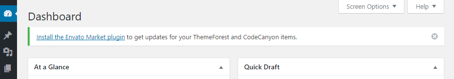
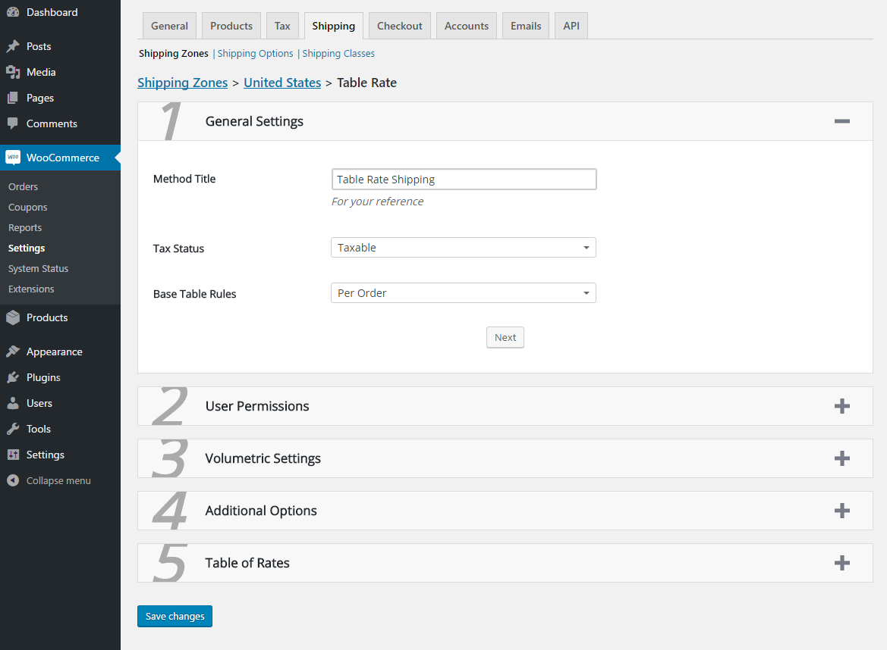
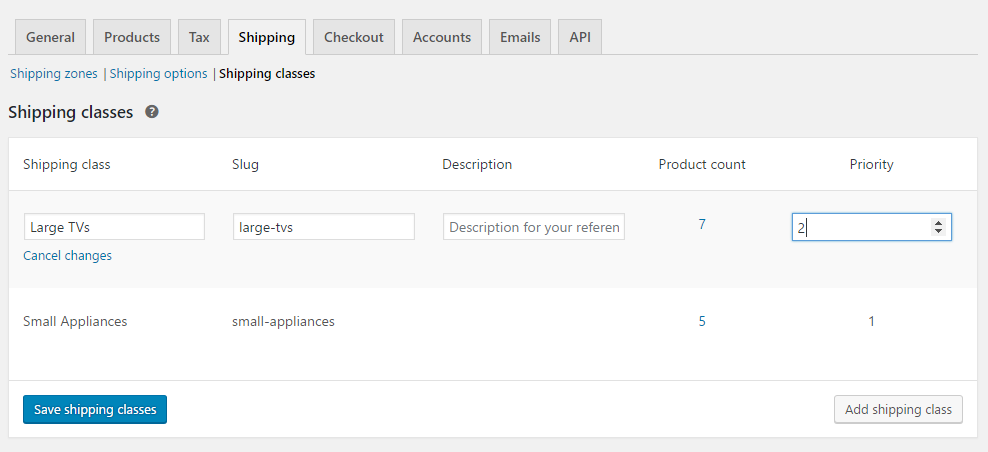
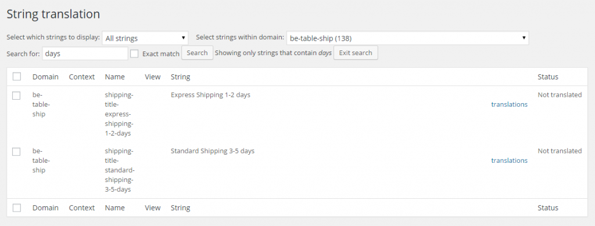

A starting point illustration of configuring your WooCommerce shipping model with the admin defined table of rates
Thank you for choosing Table Rate Shipping for WooCommerce to setup your shipping charges for your purchasing customers. The conditional statements and cost types in this shipping method allow you to create many scenarios tailored to fit your business' shipping needs.
If you have any questions throughout the setup process, please search through the documentation and read articles in the knowledgebase. There is also an FAQ you can browse through to find common questions by other users.
If you are not able to find the answer you are looking for, there is a support ticket system to receive one on one help. Support includes questions regarding usage and setup of this plugin, as well as any problems you may be experiencing. Support is not available for customizations nor compatibility issues with other third-party plugins unless otherwise stated.
Once you have purchased a license for this plugin, you will receive a purchase code which you can use to register for an account on the support site. After logging in with your new account, click the Open a Ticket link under the Support Tickets menu item.
Most tickets are responded to within 24 business hours, but may take as long as 72 business hours depending on volume.
Automatic updates are an easy way to keep this plugin running efficiently. Updates do more than offer new features. They may also fix issues found in prior versions, or issues that may arise with a future WordPress or WooCommerce update. It is important to keep this and all plugins up to date.
It is recommended that all users install the Envato Market plugin. This plugin gives the ability for WordPress to alert you to updates available for this plugin as well as others you have purchased through ThemeForest or CodeCanyon. It also provides the one click updates that you are used to with WordPress.org plugins. When you first activate this plugin, you will see a notification at the top of your dashboard prompting you to install Envato Market. You may click to enable, or dismiss the message to ignore.

If you dismiss this notification and later change your mind, you can download the Envato Market plugin from GitHub.
http://envato.github.io/wp-envato-market/
There are two options for installing this plugin the first time: via FTP and through the WordPress dashboard of your website. No matter which option you choose, you will need to first download the plugin files from your CodeCanyon downloads page.
Clicking the Download button next to this plugin will display additional options for you to select.
All future upgrades are included with the initial purchase cost. Just like installing the plugin, you will have multiple options when it comes to updates. As described before, automatic updates are available after installing the Envato Market plugin in your dashboard. It is by far the easiest and fastest way to complete future updates. You can also download the files from CodeCanyon once more and follow the installation instructions for uploading files.
Table Rate Shipping is compatible with the WooCommerce Shipping Zones introduced in WC 2.6. Before you can proceed to setup your shipping options, you will need to create the necessary shipping zones. From there you will be able to select the 'Table Rate' option to add to your chosen zone. For more information on how to create a shipping zone and assign shipping methods, please refer to the WooCommerce documentation:
https://docs.woocommerce.com/document/setting-up-shipping-zones/
This method also allows for multiple instances, so you may create a Table Rate method in several different zones, or a few different Table Rates in a single zone.
The Table Rate settings page is comprised of 5 sections, each containing a set of options for configuring this method. Each section can be expanded or collapsed to hide what you do not need at the moment.

A small but very important section, these settings will determine how the final price is calculated.
Method Title - This field is purely for your own reference. In your shipping settings this method will be listed by its 'Method Title', however it does not appear on the frontend of your shop. Customers will not see this text as they will be shown the title you specify in the table of rates.
Tax Status - This select box lets WooCommerce know whether or not you would like to tax this shipping method. When set to Taxable, the shop will tax the method according to your already defined tax settings. When Disabled, you will be able to leave 'Shipping' enabled on the tax page, but WooCommerce will not tax any shipping costs coming from this method.
Base Table Rates - How the conditions and costs apply to the customer's cart is determined by this option.
Shipping options appear for - By default shipping options defined here will appear for everyone. If you would like to setup different rates for different user roles, this option will be able to help. After selecting the Specific Roles option, another option will appear: Ship to Roles. This will allow you to select one or more roles that can receive these shipping options.
Settings can be modified by - By default only admins and users with shop manager positions will be able to modify shipping. Sometime in the near future this will be expanded upon to include users, user roles, and more.
Also popularly known as 'Dimensional Shipping', volumetric shipping is a provider's way of calculating weight values based on dimensions. If your prefered shipping carrier uses this type of calculationto adjust weight based rules, these settings will help make it easier to follow their lead.
Volumetric Number - Every provider using dimensional shipping will have a "magic number" they use to calculate the volumetric weight of an item. Entering that number here will enable this feature. When enabled, a volumetric weight will be calculated for each item in the cart. It is then compared to the physical weight of the product. The larger of the two numbers will become the product's true weight.
Operand - There are two common equations for calculating volumetric weight. Each involves the volume of the item and volumetric number supplied above. One will divide the volume by the volumetric number, and the other will multiply it. This option will determine which the plugin uses.
Include Tax - WooCommerce considers the subtotal to be the item price before any taxes or discounts are applied. Enabling this option will have the plugin compare prices including their tax value.
Include Coupons - As described above, WooCommerce considers the subtotal to be the item price before any taxes or discounts are applied. Enabling this option will have the plugin compare prices including their discounted value after coupons. If calculating per item or per class, and a cart based coupon is applied such as a $10 discount, the price for each item will include a prorated amount of the discount given.
Single Class Only - Only available when the Condition field is set to 'Per Class', this option allows you to only return the cost of one shipping class, instead of all of them combined. All items in the cart will still need to qualify for shipping in the same option, but only one price will be shown to the customer. There are two options: highest priority and highest cost. Setting up class priorities will be discussed later in the documentation.
Round Weight - This option, when enabled, will round up the weight values to the next whole number.
Hide This Method - If you choose to use the WooCommerce Free Shipping method to offer your customers the choice of free shipping, this option offers the ability to remove all rates calculated when the 'Free Shipping' method has also returned a shipping rate.
The table of rates has been condensed to three columns, with additional options in a box to the right. When you first setup this shipping method, it will ask you how many options you wish to give your customers. After selecting a number, a separate section will appear for each option with the headline "Shipping Option #" followed by the shipping option's ID number.
Below you will find the Shipping Option Title field. This is the text that the customer will see next to their shipping cost during checkout. It is a required field in order for the rest of your settings to save.
The table below the option title field is where your shipping costs will be configured. Each table can have a unlimited number of rows, but you only need one row for each different price point or criteria that must be met. The rows must also be placed in order by their priority. When calculating shipping, the plugin will start at the top of the list and provide the shipping cost of the last qualifying row. To add a new row to the table, click the 'Add Shipping Cost' link to the left, beneath the table. If you wish to delete rows that you have already setup, mark the checkbox in the left most column of the rows you wish to remove. Click the 'Delete Selected Costs' link also on the left beneath the table to remove them from the table. After any rows are added or removed, you will need to click the 'Save Changes' button at the bottom of the page in order for these changes to stay.
There are three columns in this table:
To the right you will find the Additional Settings column containing simple on/off sliders for added funtionality.
As discussed earlier, there is an option for Per Class setups that allows for only one class' cost to be returned as the shipping cost for all items in the cart. So instead of combining the cost for each class into one option, only one from one class will be used. There are two ways to determine which cost that is. The Highest Costing option will of course return the highest cost of all the shipping classes. The other option is 'Highest Priority'.
Priorities can be set within the same table that your shipping classes were setup in. After activating this plugin, a new column was added to the end of the list labeled 'Priority'. By default, all shipping classes will have a priority of 0. To change this, click on the 'Edit' link that appears when you hover over a row in the table. This will change the number 0 into a text field where you can set the actual priority value. Click the 'Save Changes' button to save the new number. Remember, the higher the number, the higher the priority.

WPML is a popular plugin for translating the text within your website to various languages for your international customers. One of the benefits of the Table Rate shipping method is that you can define regions across the world and offer varying shipping costs for each. But that means customers speaking different languages, so you will want to ensure that your titles translate accordingly. Before we get started, if you do not have a copy of WPML, you can purchase one here.
Install and activate the necessary WPML plugins (WPML Multilingual CMS, WPML String Translation, WPML Translation Management). Once these have been installed, you will also need to install WooCommerce Multilingual to manage the translations for your ecommerce shop. Set up WPML from WPML->Languages. WPML has a simple three step process to guide you through installation, but if you need any further help, please see the WPML Getting Started Guide for a complete reference.
After you submit the form to save your Table Rate settings, this plugin will scan through your table and find all unique Titles. During the process, it will register them with WPML so that they can be later translated. Because this information is not part of the post or page structure of WordPress, its translation settings can be found WPML->String Translation.
A complex site may contain many strings to translate. Using the display filter, at the top of the String Translation page, filter the Domain to display ‘be-table-ship’. Each unique shipping title in the table will have a Name in the following format: shipping-title-your-shipping-title-here

Click on the translations link to open the translation editor. Be sure to click on ‘translation is complete‘ after you translate. Incomplete translations will not appear in the site.
Sometimes the strings you need to translate may not have properly registered themselves, but fear not for there is another way! Visit your string translation settings at WPML->String Translation and scroll down to the bottom of the page. Click on the link Translate strings in admin screens, and search for the missing string using one or more words that can be found in the text. Once found, mark the checkbox next to the desired string or strings, and submit the form by click Apply at the bottom of the form. Now when you return to your String Translation settings page, the missing string should now be visible and ready for translation.
Perhaps you not longer use a certain shipping title and wish to remove the strings associated with it. Simply select the strings you want to remove and click “Delete”. Learn more about String Translation
I've used the following resoures to create this plugin.
Once again, thank you for purchasing this plugin. I hope that this shipping method will help to manage your shipping costs a little easier. Please remember that this documentation is simply a starting point, a brief overview of how to use this plugin. If you have any questions during setup or use of this plugin, please visit the support site to review helpful articles or open a support ticket.
Are you enjoying this plugin? Don't forget to leave it a five star rating!